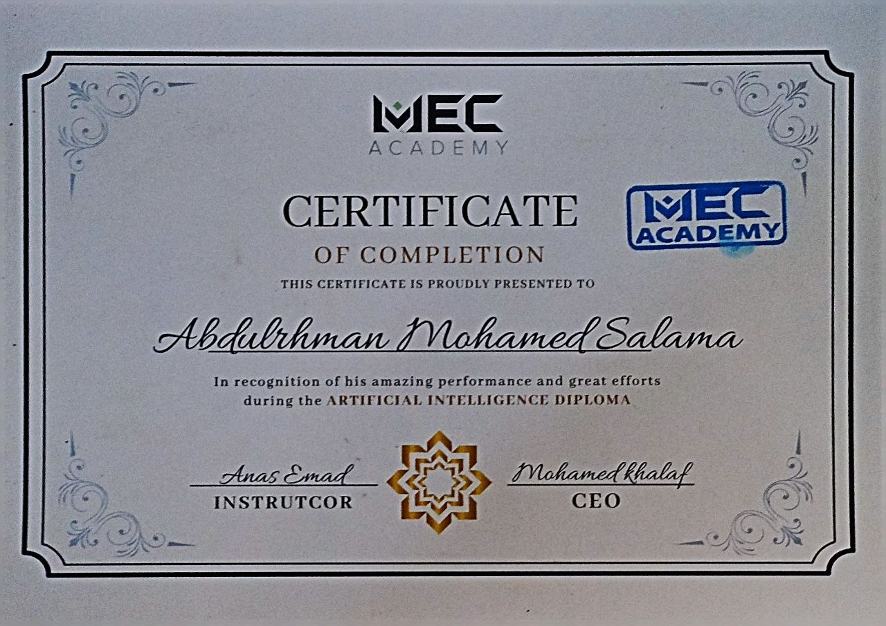
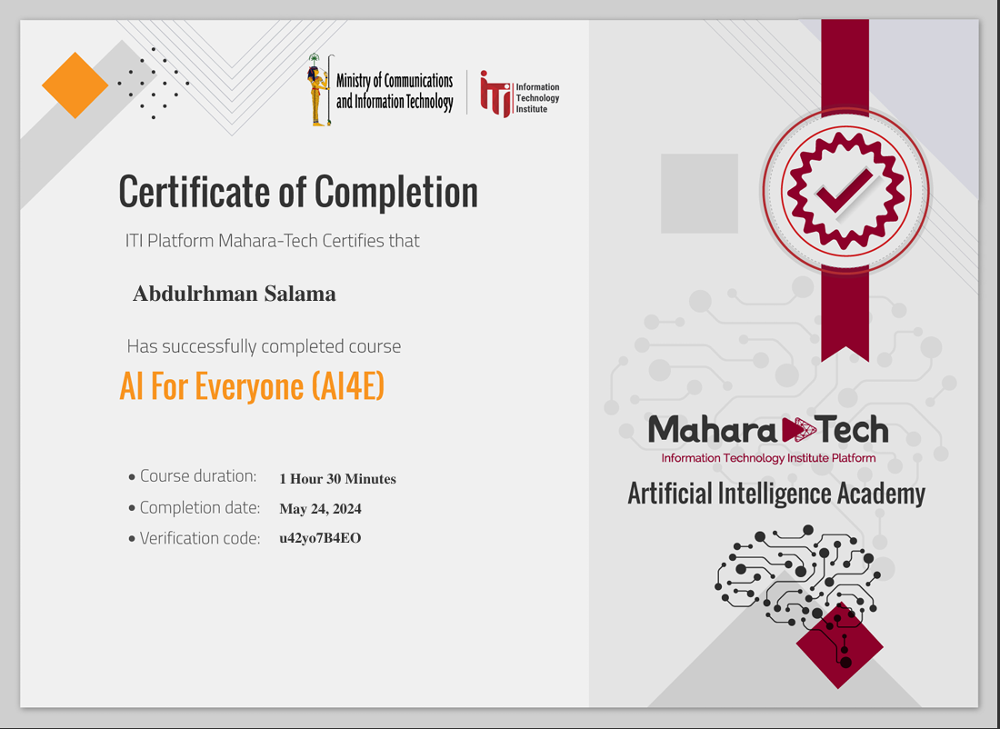
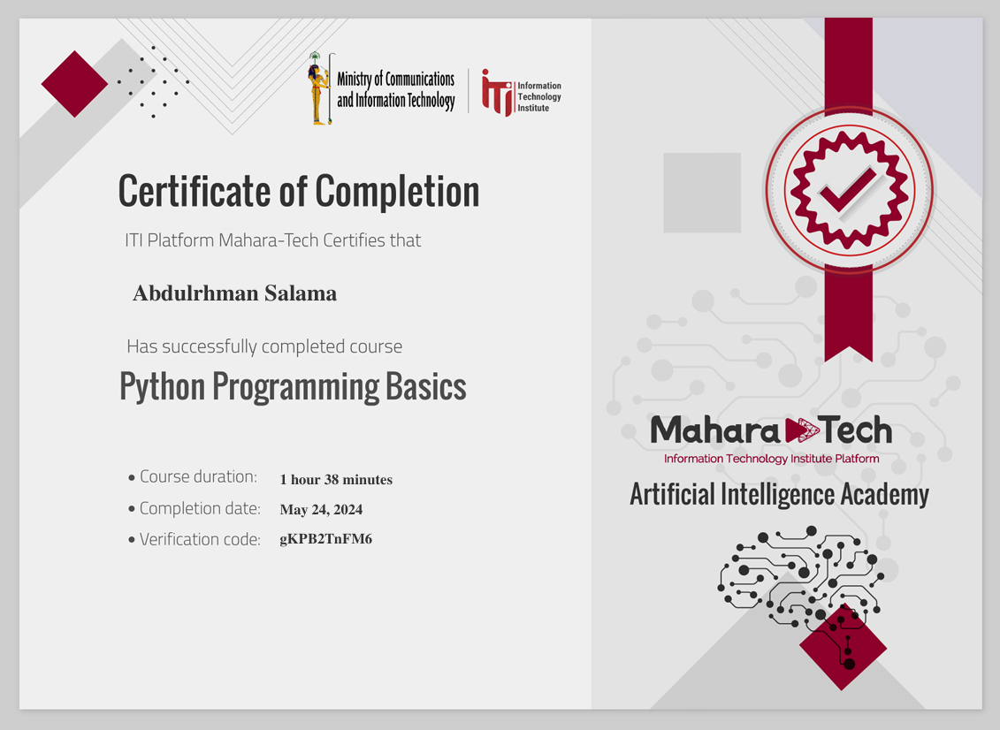
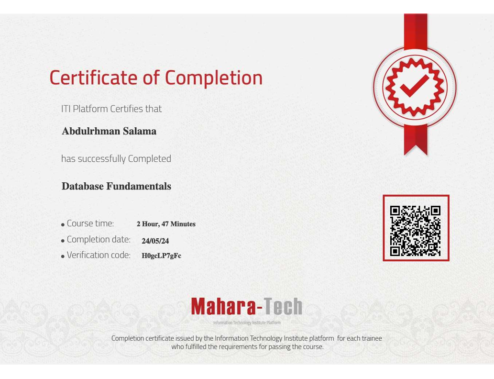
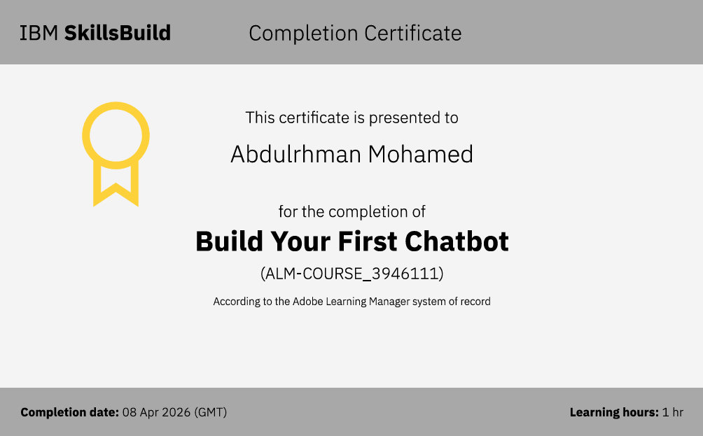
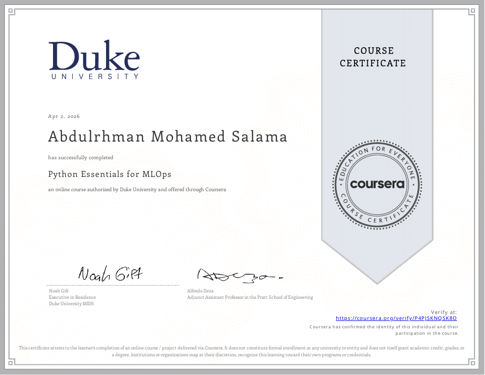
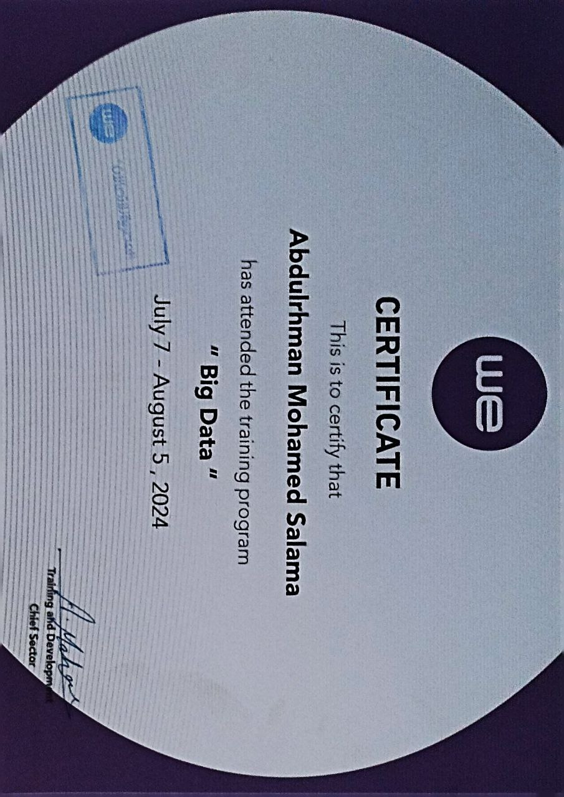
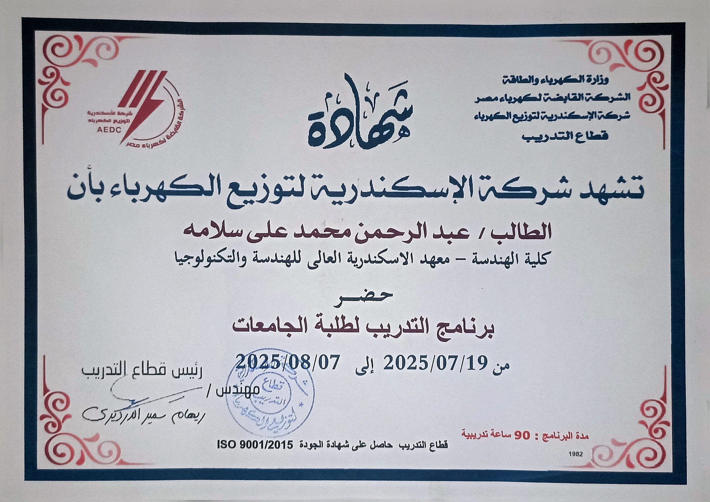
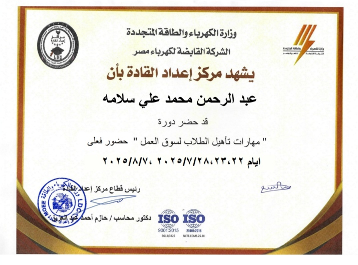
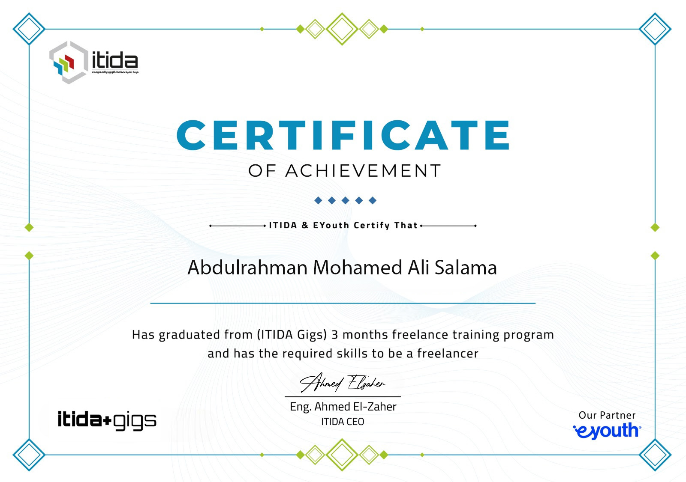

Learning & professional development
Certificates & Training
Credentials across AI, programming, data, MLOps and professional development. Select any certificate for the story behind it.

AI for Everyone (AI4E)
ITI — Mahara-TechClick to view certificate details
Python Programming Basics
ITI — Mahara-TechClick to view certificate details
Database Fundamentals
ITI — Mahara-TechClick to view certificate details
Build Your First Chatbot
IBM SkillsBuildClick to view certificate details
Python Essentials for MLOps
Duke University — CourseraClick to view certificate details
Big Data Training
WE TelecomClick to view certificate details
University Students Training Program
Alexandria Electricity Distribution CompanyClick to view certificate details
Labor Market Preparation Skills
Leadership Preparation CenterClick to view certificate details